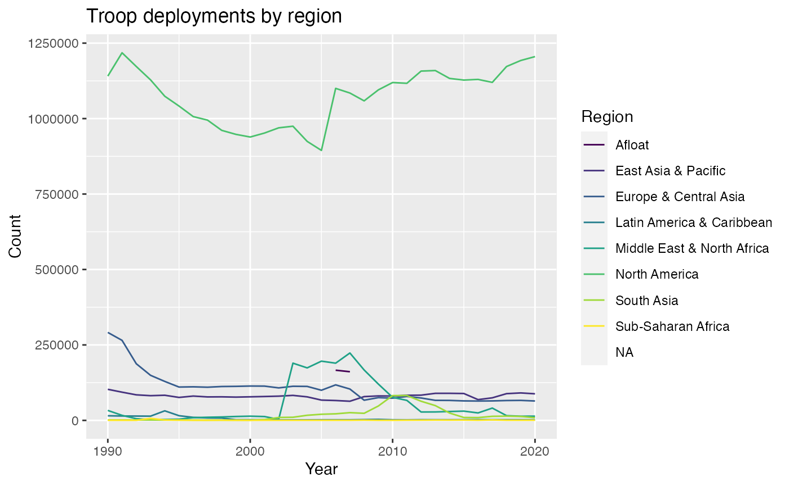

This page provides an overview for the get_troopdata() function, highlighting some of its potential uses.
First things first—let’s load the troopdata package
The troopdata package provides multiple functions to generate customizable datasets containing information on US military deployments and accompanying data. The get_troopdata() function represents the core of this package, providing customized data on US overseas troop deployments, specifically.
The first function of this package is the get_troopdata() function. At its most basic this function returns a data frame of country-year troop deployment values for the selected time period, using the startdate and enddate parameters.
For users who want more refined data, the host argument and the branch arguments allow users to specify the set of host countries for which they would like data returned. This must be a single numerical value equal to a Correlates of War (COW) Project country code, a single character value equal to an ISO3C country code, or a vector of similar values. Note they must be consistent (i.e. they must all be numeric COW codes or ISO3C character codes).
For example, you can use a numeric vector of COW country codes:
# Let's make the host selection more specific
hostlist <- c(200, 220)
example <- get_troopdata(host = hostlist, startyear = 1990, endyear = 2020)
#> Warning: Data include troop values for unknown locations and personnel listed as
#> 'afloat'.
#> Warning in if (is.na(host)) {: the condition has length > 1 and only the first
#> element will be used
#> Warning in if (host == "region") {: the condition has length > 1 and only the
#> first element will be used
head(example)
#> # A tibble: 6 × 6
#> countryname ccode iso3c year troops region
#> <chr> <dbl> <chr> <dbl> <dbl> <chr>
#> 1 United Kingdom 200 GBR 1990 25111 Europe & Central Asia
#> 2 United Kingdom 200 GBR 1991 23442 Europe & Central Asia
#> 3 United Kingdom 200 GBR 1992 20048 Europe & Central Asia
#> 4 United Kingdom 200 GBR 1993 16100 Europe & Central Asia
#> 5 United Kingdom 200 GBR 1994 13781 Europe & Central Asia
#> 6 United Kingdom 200 GBR 1995 12131 Europe & Central AsiaOr you can use a character vector of ISO3C codes.
hostlist.char <- c("CAN", "GBR")
example.char <- get_troopdata(host = hostlist.char, startyear = 1970, endyear = 2020)
#> Warning: Data include troop values for unknown locations and personnel listed as
#> 'afloat'.
#> Warning in if (is.na(host)) {: the condition has length > 1 and only the first
#> element will be used
#> Warning in if (host == "region") {: the condition has length > 1 and only the
#> first element will be used
head(example.char)
#> # A tibble: 6 × 6
#> countryname ccode iso3c year troops region
#> <chr> <dbl> <chr> <dbl> <dbl> <chr>
#> 1 Canada 20 CAN 1970 2643 North America
#> 2 Canada 20 CAN 1971 1835 North America
#> 3 Canada 20 CAN 1972 1742 North America
#> 4 Canada 20 CAN 1973 1362 North America
#> 5 Canada 20 CAN 1974 1580 North America
#> 6 Canada 20 CAN 1975 1301 North America
hostlist <- c(20, 200, 220)
example <- get_troopdata(host = hostlist, branch = TRUE, startyear = 2006, endyear = 2020)
#> Warning: Branch data only available for 2006 forward.
#> Warning: Data include troop values for unknown locations and personnel listed as
#> 'afloat'.
#> Warning in if (is.na(host)) {: the condition has length > 1 and only the first
#> element will be used
#> Warning in if (host == "region") {: the condition has length > 1 and only the
#> first element will be used
head(example)
#> # A tibble: 6 × 10
#> countryname ccode iso3c year troops army navy air_force marine_corps region
#> <chr> <dbl> <chr> <dbl> <dbl> <dbl> <dbl> <dbl> <dbl> <chr>
#> 1 Canada 20 CAN 2006 133 7 35 81 10 North…
#> 2 Canada 20 CAN 2007 141 7 41 84 9 North…
#> 3 Canada 20 CAN 2008 92 8 0 82 2 North…
#> 4 Canada 20 CAN 2009 91 8 0 83 0 North…
#> 5 Canada 20 CAN 2010 129 3 28 98 0 North…
#> 6 Canada 20 CAN 2011 128 7 38 83 0 North…Sometimes users are also interested in obtaining data on regional patterns in U.S. deployments. Now users can enter host = "region" to obtain regional sums of U.S. deployments. The year and branch arguments work as in the previous examples, allowing users to generate summed values for aggregate troop deployments or branch-specific deployment sums by region. These values can be plotted as in previous examples, too.
regional.sum <- get_troopdata(host = "region", startyear = 1990, endyear = 2020)
#> Warning: Data include troop values for unknown locations and personnel listed as
#> 'afloat'.
ggplot(regional.sum, aes(x = year, y = troops, color = region)) +
geom_line() +
viridis::scale_color_viridis(discrete = TRUE) +
labs(x = "Year",
y = "Count",
title = "Troop deployments by region",
color = "Region")
#> Warning: Removed 13 row(s) containing missing values (geom_path).